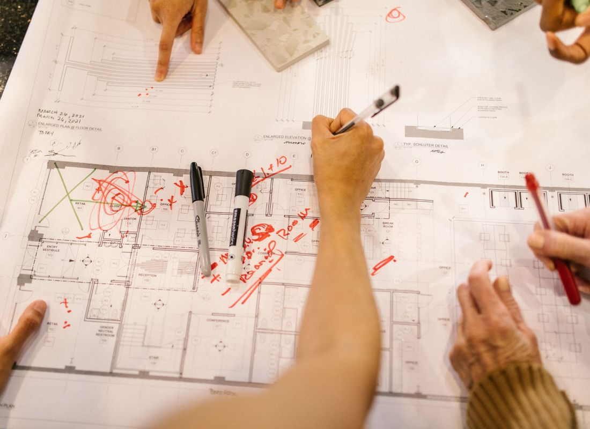
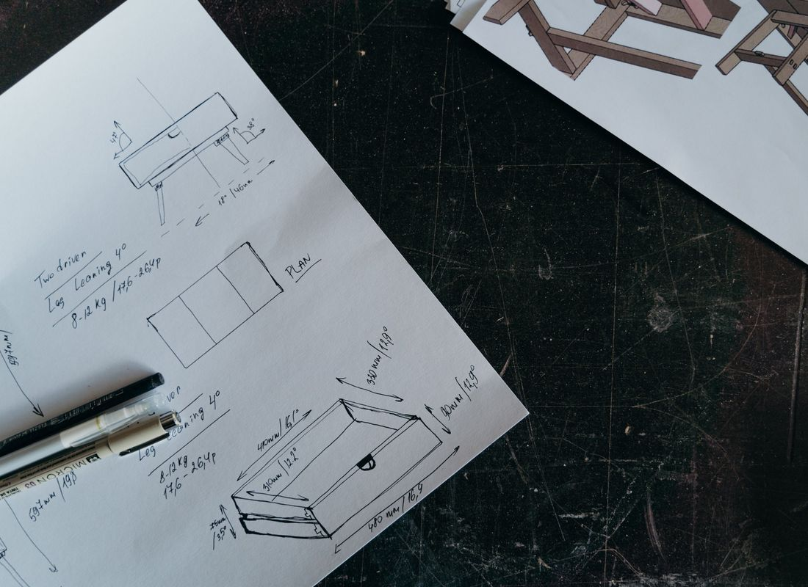
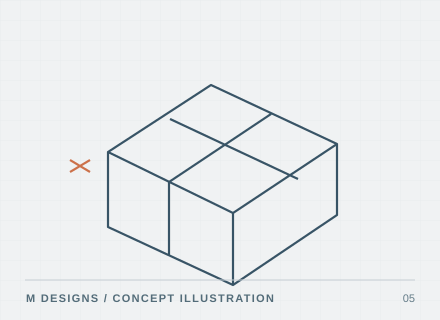

CAD drawing amendments
Redline mark-ups turned into a clean, revised drawing issue.
- Redline revisions
- Dimension and note updates
- PDF and DWG issue
CAD drafting services · Colchester & Essex
Construction and mechanical drawing support for fabricators, builders, architects, engineering contractors and small businesses. One drawing or a regular stream of work.
 CAD • DRAWINGS • MODELLING
CAD • DRAWINGS • MODELLINGServices
Choose the service you need, or send what you have and I'll recommend the right output.

Redline mark-ups turned into a clean, revised drawing issue.

Hand sketches, site measurements and old PDFs redrawn as editable CAD.
Workshop-ready drawings for steelwork, brackets, frames and components.

Plans, elevations and layouts for construction sites, plant and equipment.

SketchUp models to review layouts, check fit and explain ideas to clients.

Print-ready models and one-off prototypes for fit and concept checks.
How it works
A sketch, photo, PDF or existing CAD file.
Price, deliverables and delivery date agreed up front.
Every drawing is checked against your information before issue.
PDF, DWG, DXF or 3D model, ready to use.
Start with a brief
Send what you have and I'll come back with a fixed quote and delivery date.
Request a quote →